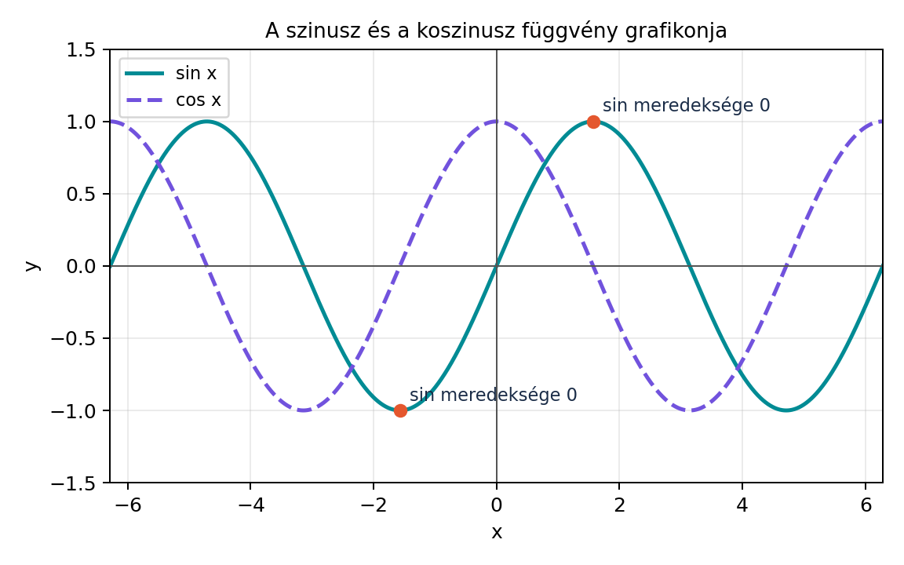
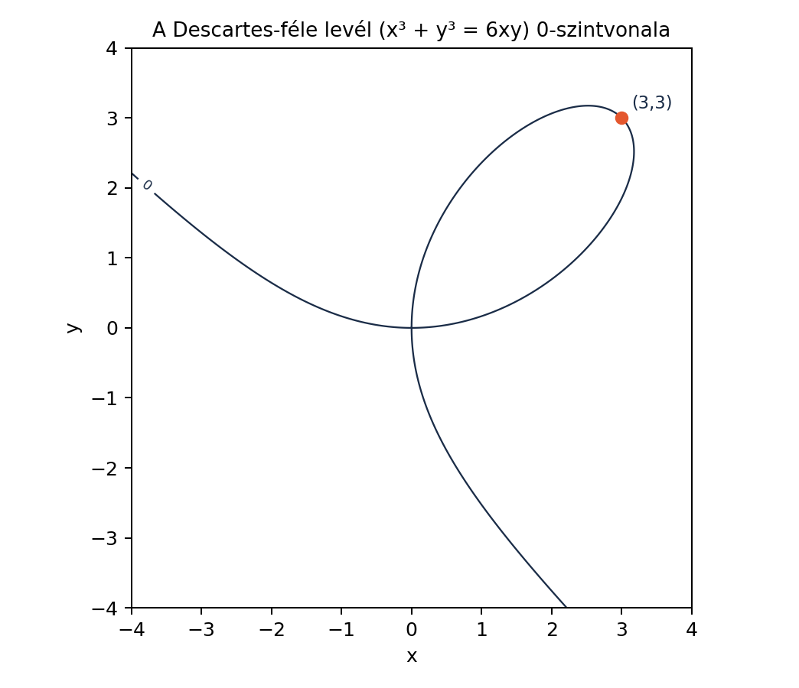

10.4 Elemi függvények deriváltjai,
implicit deriválás és kapcsolt változási sebességek
10.4.1 Motiváció
Az előző alfejezetekben megismertük a derivált fogalmát és a
legfontosabb szabályokat: az összeg, a szorzat, a hányados deriváltját,
a láncszabályt és az inverz függvény deriváltját. Most ezeket az
eszközöket használjuk arra, hogy kiszámítsuk az összes elemi függvény –
az exponenciális, a logaritmus, a trigonometrikus, a ciklometrikus és a
hiperbolikus függvények – deriváltját. Ezzel egy teljes, jól használható
deriválttáblázatot építünk fel, amelyre a későbbi fejezetekben
(integrálás, Taylor-sor, differenciálegyenletek) is folyamatosan
támaszkodunk.
A gyakorlati problémákban azonban gyakran nem egyetlen, explicit
képlettel adott függvényt kell deriválni. Előfordul, hogy a változók
közötti összefüggést egyenlet adja meg, például egy kör vagy egy
bonyolultabb görbe egyenlete, és ebből kell az érintő meredekségét
meghatározni – ezt oldja meg az implicit deriválás.
Emellett a valóságban a mennyiségek együtt változnak az idővel: ha egy
létra csúszik, két hajó távolodik, vagy egy tartály töltődik, akkor több
változási sebesség is kapcsolódik egymáshoz. Az ilyen feladatokat
kapcsolt változási sebesség (related rates)
feladatoknak nevezzük, és a láncszabály egyszerű, de nagyon hatékony
alkalmazását jelentik.
10.4.2 Szemléletes kép: a szinusz
deriváltja a koszinusz
Mielőtt a pontos levezetésre rátérnénk, nézzük meg a
és a
grafikonját együtt. A derivált geometriai jelentése az érintő
meredeksége. Figyeljük meg, hogy a szinuszfüggvény érintője vízszintes
(meredeksége 0) ott, ahol a koszinusz értéke 0; a szinusz meredeksége
pozitív, ahol a koszinusz pozitív, és negatív, ahol a koszinusz negatív.
Ez a megfigyelés éppen a
képletet vetíti előre.

A szinusz és a koszinusz függvény
grafikonja - A sin x érintőinek meredeksége ott nulla, ahol cos x értéke
nulla; a derivált kapcsolat szemléltetése. A görbék a matematikai
definíció szerint rajzolva.
A rajz azt sugallja, hogy a szinusz meredekségfüggvénye pontosan a
koszinusz, és ezt rövidesen be is bizonyítjuk.
10.4.3 Az exponenciális és a
logaritmusfüggvény deriváltja
Bizonyítás. A derivált definíciója szerint, a
hatványozás azonosságait felhasználva:
Itt kihasználtuk, hogy
nem függ
-tól,
ezért kiemelhető a határértékből. ∎
Tétel. Ha
,
akkor
.
Bizonyítás. Írjuk át az
kifejezést
alapú hatvánnyá:
.
Ezután alkalmazzuk a láncszabályt a külső
és a belső
függvényre:
A láncszabály feltételei teljesülnek, hiszen az exponenciális
függvény és a lineáris függvény is differenciálható. ∎
A természetes logaritmus deriváltját az inverz függvény deriváltjára
vonatkozó tétellel kapjuk meg. Emlékeztetünk rá: ha
szigorúan monoton, differenciálható, és
,
akkor
Tétel. A
függvény deriváltja
,
ahol
.
Bizonyítás. Legyen
,
azaz
.
Itt
,
és ennek deriváltja
.
Az inverz függvény deriváltjának képlete szerint:
A feltételek teljesülnek, mert az
függvény szigorúan monoton növekvő és mindenütt differenciálható,
továbbá a deriváltja sohasem nulla. ∎
Más alapú logaritmusra:
,
ezért
Példa. Deriváljuk az
függvényt!
Megoldás. A láncszabályt és a fenti képleteket
használjuk:
Ellenőrzésképpen: ha
,
akkor
,
ami pozitív, tehát
növekvő az
pont környezetében.
10.4.4 A trigonometrikus függvények
deriváltjai
A szinusz deriváltjához az addíciós tételt és a nevezetes
határértékeket használjuk.
Tétel.
.
Bizonyítás. A derivált definíciója, majd a
addíciós tétel szerint:
Sok görbét nem
alakban, hanem
és
közötti egyenlettel adunk meg, például
.
Ilyenkor
lokálisan lehet
függvénye, de gyakran nem fejezhető ki zárt alakban (gondoljunk a
egyenletre). Az implicit deriválás módszerével
közvetlenül az egyenletből számíthatjuk ki a
deriváltat anélkül, hogy
-t
kifejeznénk.
Módszer (implicit deriválás). 1. Tegyük fel, hogy az
egyenlet megoldása lokálisan
.
2. Deriváljuk az egyenlet mindkét oldalát
szerint, miközben
-t
függvényének tekintjük. Ez azt jelenti, hogy ha egy tagban
szerepel, akkor a láncszabály szerint a deriváltja
-vel
szorzódik: például
.
3. A kapott egyenletet oldjuk meg
-re.
Az eredmény általában
-et
és
-t
is tartalmaz, ami természetes.
Példa (kör). Adjuk meg az
kör érintőjének meredekségét a
pontban!
Megoldás. Deriváljuk mindkét oldalt
szerint:
Ebből
A
pontban
.
Az érintő egyenlete:
,
azaz
.
Ellenőrzés: a körhöz a
pontban húzott sugár meredeksége
,
és a sugárra merőleges érintő meredeksége
,
ami egyezik.
Példa (Descartes-féle levél). Deriváljuk implicit
módon az
egyenletet, és határozzuk meg az érintő meredekségét a
pontban!
Megoldás. A bal oldal deriváltja:
.
A jobb oldalon a szorzat- és láncszabályt kell alkalmazni:
deriváltja
.
Tehát:
Rendezzük az
tagokat egy oldalra:
A
pontban
.
Az érintő egyenlete
,
azaz
.
Ellenőrzésképpen a pont valóban rajta van a görbén:
és
.
Az implicit deriválás geometriai jelentését az alábbi szintvonalas
ábra mutatja: a
függvény 0-szintvonala a levélgörbe, és a
pontban húzott érintő meredeksége
.

A Descartes-féle levél (x³ + y³ = 6xy)
0-szintvonala - A szintvonal a F(x,y) = x³ + y³ − 6xy függvény 0
értékéhez tartozik. A (3,3) pontban az implicit deriválás szerint az
érintő meredeksége −1.
10.4.9 Kapcsolt változási
sebességek
Amikor két vagy több mennyiség együtt változik az időben, és a köztük
lévő összefüggést ismerjük, a deriváltak közötti kapcsolatot a
láncszabállyal teremthetjük meg. Az ilyen feladatoknál az idő szerinti
deriváltakat keressük, amelyeket gyakran a mennyiség neve fölé tett
ponttal is jelölnek (mi itt a
jelölést használjuk).
Számolási recept (kapcsolt sebességek).
Azonosítsd a változó mennyiségeket és a konstansokat. Rajzolj
egyszerű ábrát, és jelöld az ismert és ismeretlen változási
sebességeket.
Írj fel egy egyenletet, amely a változókat összekapcsolja
(geometriai, fizikai vagy egyéb modell).
Deriváld az egyenlet mindkét oldalát az idő
szerint, ügyelve a láncszabályra: ha egy mennyiség függ az időtől, akkor
a deriváltja a belső deriválttal szorzódik, például
.
Helyettesítsd be az ismert értékeket abban az időpillanatban,
amelyre a kérdés vonatkozik.
Oldd meg a kapott egyenletet a keresett deriváltra, majd ellenőrizd
az előjelet és a mértékegységet.
Ez a módszer a láncszabály természetes alkalmazása, és a későbbi A többváltozós láncszabály alfejezetben
általánosabb formában is visszaköszön.
Példa (létra a falnál). Egy 5 méter hosszú létrát
egy függőleges falnak támasztunk. A létra alsó vége 3 méterre van a
faltól, és
m/s sebességgel csúszik kifelé. Milyen sebességgel csúszik lefelé a
létra felső vége ebben a pillanatban?
Megoldás. Legyen
a létra alsó végének távolsága a faltól,
a felső végének magassága a talaj felett. A létra hossza állandó, ezért
Pitagorasz tétele szerint:
Deriváljuk mindkét oldalt
szerint:
Ebből
Adott pillanatban
m, és mivel
m, továbbá
m/s:
A negatív előjel azt jelenti, hogy a létra felső vége lefelé mozog,
sebessége
m/s.
Az alábbi ábra a recept 1. lépésének „egyszerű ábráját” és a mozgás
folytatását mutatja: ha az alsó vég továbbra is állandó
m/s sebességgel csúszik, azaz
,
akkor a felső vég sebessége
nem állandó:
m-nél már
m/s,
m-nél
m/s.
Statikus változat (mint a PDF-ben)
A létra felső vége egyre gyorsabban csúszik: (a) a létra
három helyzete, (b)
az
függvényében, állandó
m/s mellett
Példa (kúp alakú tartály töltése). Egy csúcsával
lefelé álló kúp alakú tartály magassága 4 m, alapkörének sugara 2 m. Víz
folyik bele
állandó sebességgel. Milyen gyorsan emelkedik a vízszint, amikor a víz
magassága 3 m?
Megoldás. A víz térfogata
,
ahol
a vízfelszín sugara,
a víz magassága. Hasonló háromszögek miatt
,
tehát
.
Így
Deriváljuk mindkét oldalt az idő szerint:
Behelyettesítve
és
:
A vízszint tehát körülbelül
m/min sebességgel emelkedik.
10.4.10 Valós életbeli alkalmazás:
radar által mért közeledési sebesség
Egy repülőgép vízszintes egyenes vonalban, állandó 5 km magasságban
közeledik egy radarhoz. A radar a repülőtől mért távolságát méri, és
annak változási sebességét regisztrálja. Tegyük fel, hogy amikor a
repülő vízszintes távolsága a radar feletti ponttól 12 km, a repülő
sebessége 800 km/h. Milyen gyorsan csökken ebben a pillanatban a radar
által mért távolság?
Modellalkotás. Jelölje
a repülő vízszintes távolságát a radar fölötti ponttól,
pedig a radar és a repülő közötti egyenes távolságot. A magasság
km állandó. A derékszögű háromszögre Pitagorasz tétele:
Deriváljuk az idő szerint:
A repülő közeledik, ezért
csökken, tehát
km/h. A kérdéses pillanatban
km, így
km. Behelyettesítve:
Értelmezés. A radar által mért távolság tehát
körülbelül
km/h sebességgel csökken, ami kisebb, mint a repülő tényleges sebessége
(
km/h). Ez érthető: a repülő nem pontosan a radar felé repül, hanem a
magassága miatt a távolságváltozás csak a vízszintes komponens vetülete.
A radar által mért mennyiséget radiális sebességnek
nevezzük, és ez mindig kisebb vagy egyenlő a tényleges sebességnél. A
modell korlátja, hogy a repülőt pontszerűnek és a Földet síknak
tekintjük; nagy távolságoknál a görbület és a légköri hatások is
szerepet játszhatnak.
10.4.11 Python-illusztráció
Az alábbi rövid SymPy-kód szimbolikusan ellenőrzi az implicit
deriválást és néhány elemi deriváltat. A kód nem bizonyítás, csak
számítógépes megerősítés.
import sympy as spx, y = sp.symbols('x y')# Implicit deriválás: x^2 + y^2 = 25 -> y' = -x/y# A SymPy idiff függvénye közvetlenül számol implicit deriváltat.expr = x**2+ y**2-25dy_dx = sp.idiff(expr, y, x)print("Implicit derivált (kör):", dy_dx)# Néhány elemi derivált ellenőrzésefor f in [sp.exp(x), sp.ln(x), sp.sin(x), sp.cos(x), sp.atan(x)]:print(f"d/dx({f}) =", sp.diff(f, x))
A kimenet összhangban van a levezetett képletekkel. A
sp.atan a SymPy-ban az általunk
-nek
nevezett függvény.
10.4.12 Tipikus hibák
A láncszabály elfelejtése implicit deriválásnál. Ha
például
tagot deriválunk
szerint, sokan egyszerűen
-t
írnak, pedig a helyes eredmény
,
hiszen
maga is függ
-től.
Hasonlóan
deriváltja
.
Az inverz függvény deriváltjának rossz
felhasználása. Az
deriváltjánál könnyű előjelhibát véteni, vagy a
helyett
-et
írni. Fontos megjegyezni, hogy a főintervallumon a koszinusz nemnegatív,
ezért
jelenik meg.
Kapcsolt sebességeknél a konstans mennyiségek
deriválása. A létra feladatában a létra hossza állandó, ezért
nem deriváljuk, csak a Pitagorasz-egyenletben szereplő változókat. Ha
valaki a 25-öt is deriválja,
-t
kap, ami nem változtat az egyenleten, de a módszertani hibát jelzi.
Fontosabb, hogy a pillanatnyi értékeket kell behelyettesíteni, nem
általános képletbe.
Mértékegységek keverése. Ha a sebességek km/h-ban
és m/s-ban is szerepelnek, a végeredmény hibás lesz. Mindig egyeztessük
a mértékegységeket, és a végeredmény mellé írjuk oda a
mértékegységet.
Az előjel téves értelmezése. A negatív derivált nem
feltétlenül hibás: azt jelenti, hogy a mennyiség csökken. A fizikai
értelmezésnél mondjuk ki, mit jelent a negatív érték.
10.4.13 Önellenőrzés
Miért éppen
az egyetlen alap, amelyre
?
Fogalmazd meg a feltételt.
Vezesd le egy sorban a
deriváltját.
Az implicit deriválás során miért jelenik meg
a
-t
tartalmazó tagok deriváltjában?
Egy henger alakú tartályban a vízszint emelkedési sebessége
.
Ha a tartály sugara
állandó, írd fel a térfogatváltozás
képletét a
segítségével.
Az
kör esetén mi a derivált értéke a
pontban? Mi történik itt geometriailag?
10.4.14 Feladatok
1. feladat (A). Számítsd ki az
deriváltját.
2. feladat (A). Implicit deriválással add meg az
görbe érintőjének meredekségét az
pontban!
3. feladat (B). Határozd meg az
függvény deriváltját, ahol
,
és add meg, hol nulla a derivált.
4. feladat (B). Egy 10 m hosszú létra alsó vége 6
m-re van a faltól, és
m/s sebességgel csúszik kifelé. Milyen gyorsan csúszik lefelé a létra
felső vége ebben a pillanatban?
5. feladat (C). Bizonyítsd be az inverz függvény
deriváltjának felhasználásával, hogy
.
Részletezd a feltételeket.
6. feladat (D). Egy vízszintes tengelyű, henger
alakú olajtartály sugara 2 m, hossza 10 m. Az olaj szintje a tartály
aljától mérve éppen 1 m magasságban van, és
m/h sebességgel emelkedik. Milyen sebességgel folyik be az olaj a
tartályba? (Használhatjuk a körszelet területképletét: ha a folyadék
mélysége
,
akkor a nedvesített keresztmetszet területe
,
ahol
a sugár.)
10.4.15 Megoldások
10.4.15.1 Önellenőrzés –
válaszok
Az
képletből látszik, hogy
szükséges, tehát
.
Ezért csak az
alapú exponenciális deriváltja önmaga.
,
hányadosszabály:
.
Mert
valójában
függvénye, így a láncszabály szerint
.
,
ezért
.
Az implicit deriválás:
,
tehát
.
A
pontban
,
az érintő vízszintes. Geometriailag ez a kör legfelső pontja.
10.4.15.2 Feladatok megoldásai
1. feladat (A).
2. feladat (A). Deriváljuk mindkét oldalt:
A szorzat- és láncszabállyal:
Rendezzük:
Az
pontban:
.
Az érintő meredeksége
.
3. feladat (B). Láncszabály a külső
és belső
függvénnyel:
A derivált nulla, ha
,
azaz
az adott intervallumon. Ez a szinusz maximumhelye, ahol az érintő
vízszintes.
4. feladat (B). Legyen
az alsó vég távolsága a faltól,
a felső vég magassága. Pitagorasz:
.
Deriválva:
,
azaz
.
A pillanatban
,
,
m/s. Tehát
A létra teteje
m/s sebességgel csúszik lefelé.
5. feladat (C). Legyen
,
amely szigorúan monoton és differenciálható a
intervallumon, deriváltja
.
Az inverz függvény
,
tehát
.
Az inverz függvény deriváltjának képlete:
Mivel itt
,
és
.
A formula minden
esetén érvényes, mert a tangens a fenti intervallumon minden valós
értéket felvesz.
6. feladat (D). Az olaj térfogata
,
ahol
m a tartály hossza,
a nedvesített keresztmetszet területe. A megadott képlet szerint
,
ahol
m. Deriváljuk az idő szerint (a láncszabályt alkalmazva
-ra,
mert
függ az időtől):
Számítsuk ki a
deriváltat. Először az első tag:
deriváltja
,
ahol
,
így
.
Tehát
A második tag:
szorzatfüggvény, legyen
,
.
Ekkor
(a negatív előjel miatt
deriváltja
),
.
Így a szorzat deriváltja:
Egyszerűsítve a számlálót:
.
De ez bonyolult. Egyszerűbb felhasználni, hogy az előző tagban a nevező
,
így az első tag deriváltja
.
A második tag deriváltja, ahogy fent számoltuk,
.
Tehát:
(Ez a jól ismert eredmény: a körszelet területének deriváltja éppen a
húrhossz, azaz
.)
Most helyettesítsünk be:
m,
m,
m/h. Ekkor
m, tehát
m. Így
Az olaj tehát körülbelül
sebességgel folyik be.
10.4.16 Rövid összefoglaló
Ebben az alfejezetben levezettük az összes elemi függvény
deriváltját, és felépítettük a deriválttáblázatot, amelyet a A primitív függvény és az alapintegrálok, a Taylor-polinomok és a Nevezetes
függvények Taylor-sora alfejezetekben is használunk. Az
exponenciális függvény deriváltja önmaga, a logaritmusé
,
a trigonometrikus függvények közül
és
,
a ciklometrikus függvények deriváltjai
,
és
,
a hiperbolikus függvények esetén pedig
és
.
Az implicit deriválás módszerével olyan görbék
érintőjét is meghatározhatjuk, amelyeket
alakú egyenlet ad meg, és ez a technika az Implicit
és inverz függvény tétele és a Feltételes
szélsőérték: Lagrange-multiplikátor alfejezetekben válik elméletileg
is megalapozottá. A kapcsolt változási sebességek
feladatai a láncszabály közvetlen alkalmazásai: ha két mennyiség
egyenlettel összefügg, és az egyik változási sebességét ismerjük, a
másikét deriválással számíthatjuk ki; ez a módszer a többváltozós
láncszabály A többváltozós láncszabály
alfejezetben általánosítható.
10.4.17 Források és ellenőrzési
hiányok
A levezetések a klasszikus kalkulus stabil eredményein alapulnak
(Stewart, Spivak, Thomas, Laczkovich–T. Sós tankönyvei nyomán), ezért
külön hivatkozást nem igényelnek. A Python-kód a SymPy aktuális
dokumentációján alapul, azonban a pontos függvénynevek verziótól
függhetnek; használat előtt érdemes ellenőrizni a telepített változat
dokumentációját. A fizikai modellek adatai (repülő sebessége, tartály
méretei) szemléltető, kerekített modellértékek, nem valós mérésekből
származnak.